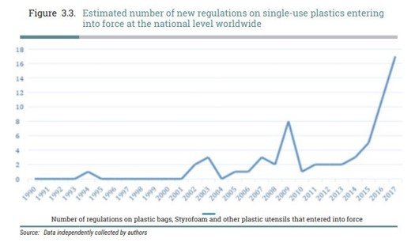

In this article I will discuss about the changing climate in the UK. The environmental landscape of the UK is changing as a result of frequent flooding, harsh storms, random heatwaves etc. Coastal regions
are becoming more vulnerable due to rising sea levels as well. All these natural hazards occur as a result of an increase of global temperature. Many world leader gathered together to discuss about alternative
methods and strategies which can be used to reduces their carbon footprint and prevent an further increase in Global Warming. It emphasises the need for ongoing research, adaptation measures, and international
collaboration. Climate change is not only affecting humans but it's effecting animals as well. As a result of climate change animals such as polar bears will be extinct by 2100. Meaning that our future generations
will not be able to see certain wonderful features of this world. There has been many animals such as the golden toad. In this article I will explain with statistic and proof.
Introduction
Climate change has become an urgent issue in the UK. But first of all, what is climate change? Climate change is when we humans burn fossil fuels which are released into the atmosphere, preventing gas from leaving
the Earth. The gases cannot leave the atmosphere because of the Greenhouse effect. Greenhouse gases are a consequence of the electromagnetic radiation at most wavelengths, which pass through the Earth's atmosphere.
How does greenhouse effect work:
1. the Earth absorbs most of the radiation and warms up
2. the Earth radiates energy as infrared radiation
3. some of the infrared radiation goes into space
4. some of the infrared radiation is absorbed by greenhouse gases in the atmosphere
5. the lower atmosphere warms up
This is essentially a blanketing effect whereby the gases are trapped and essentially warm the planet, melting glaciers and ice caps. This increases the sea levels and kills species living in the North and South
pole. Climate change is commonly understood to be one of the drivers of extinction, affecting biodiversity in nearly every corner of the planet. A few realise that the loss of biodiversity is also making climate
change worse and shifting global weather patterns. NASA scientist have observed the Earth’s surface and recorded one of the warmest years recorded in the past 2 years (1). I specifically want to look at the climate
change in the UK. A national effort has been places within the last few years to attempt to reduce our carbon footprint and make sure our ecosystem can be seen by the future generation. All the world leaders
gathered om the 1 of November 2021 in Glasgow, United Kingdom, to discuss about how they can reduce our carbon footprint. They had 3 main objectives. First was their mitigation which they want to keep the
1.5-degree warming target. Secondly, they wanted to adapt by witnessing an enhanced global agenda. Thirdly they are investing around USD 100 billion per year by 2025 to help developing country deal with adverse
effects of climate. In the UK specifically there has been more than 3700 lives claimed since 2000(2). When it comes to overall impact 343,413 have been impacted by flooding and 61,088 by storms in the UK. The 3
common natural hazard that occurs in the UK is flooding, storms and heatwaves. The burning of fossil fuel is probably one of the biggest factors which has increased our global temperature. Fossil fuels release gases
such as carbon dioxide which is released into the atmosphere and prevents heat from escaping the Earth. When heat gets trapped in the Earth the global temperature increases. Even an increase of one Celsius can have
a massive impact on our world. An increase in one Celsius may causes ice from the North and South pole to melt which increases the amount of water in the oceans. This results in a higher risk of flooding and Tsunami.
It is predicted that by 2050 sea levels rising threatens cities such as Shanghai, London to low-lying countries like Florida, Bangladesh and Maldives to be flooded. Experts have warned that sea levels could increase
as much as 10ft(2m) if the glaciers in the West Antarctica.
Table 1: Types of natural hazard in the UK in the 20th century
Types of Natural hazard
Number of hazards recorded in the 20th century(years)
Heatwave
4
z
Floods
7
Storm
6
Tornado
2
Gale
2
Earthquake
2
Table 2: Types of natural hazard recorded in the UK in the 21th century
Types of Natural hazard
Number of hazards recorded in the 21th century(years)
Heatwave
4
Floods
12
Storm
7
Tornado
1
Gale
0
Earthquake
0
Analysis and discussion
You are probably wondering how this affects us? Well to be honest, it affects us in many ways. One reason could be that the ice from the north and South Pole will melt at an increasingly rapid pace, causing half
of the world to be flooded. There will be fierce competition for the remaining land leaving it densely populated, and many animal species would not be able to survive. As the sea temperature rises many aquatic
species cannot adapt quickly enough to survive, and there is also predicted to be a huge devastation in the global insect populations. All of this has a knock-on effect in terms of food chains and our natural
resources(4). We can also see that over the last few years there has been a significant increase in natural hazards in the UK. And we must bear in mind we haven’t even finished the 21st century and natural
hazards such as flooding has already beaten last century’s data, which is concerning. With many research and proof scientist was able to relate this increase in natural hazards back to climate change. Global
temperature is ever so rapidly increasing at a rate never seen before and we should try preventing it from getting worse.
What can we do it prevent it
So, as you can see, we face a monumental challenge, so what can we do? On an individual level, first, try avoiding taking the car. Try public transport or share car with a friend - or preferably walk. Secondly,
persuade parents to buy electric or hybrid cars as they are more efficient even though they are expensive. Switching to renewable energy is key. What does renewable energy mean? Renewable energy means energy
that can be reused. Such as solar panels and wind turbines. This would save you a lot of money as well as helping the Earth. Try and waste less water, plant a tree, eat less meat. Talking of food, did you know
that the food industry is the second biggest co2 producer. And this brings us on to industrial and governmental change. To make real change, we need the help of the government. In October 2015, the plastic bag
law was introduced. In 2014, the number of single-use carrier bags handed out by a supermarket rose for the 5th year by 7.6 million. (Around 140 per person). After the 2015 laws passed, the usage of plastic bags
decreased by 86 per cent. This is tremendously successful. There are many ways to prevent the increase of global temperatures. One of them being preventing the usage of fossil fuel and use renewable energy in for
example cars. And solar panels which uses sun rays to generate electricity. If we don't act upon global warming and climate change fast, it will be catastrophic for future generations in not just the UK but the
whole world.

References
1)What Is Climate Change? | NASA Climate Kids NASA Climate Kids. (n.d.). What Is Climate Change? [online] Available at: https://climatekids.nasa.gov/climate-change-meaning/#:~:text=The%20Short%20Answer%3A.
[Accessed 27 Oct. 2023].
2)Natural disasters 'have claimed more than 3,700 lives in the UK since 2000' - Energy Live News Mavrokefalidis, D. (2022). Natural disasters ‘have claimed more than 3,700 lives in the UK since 2000’. [online] Energy Live News. Available at:
https://www.energylivenews.com/2022/03/30/natural-disasters-have-claimed-more-than-3700-lives-in-the-uk-since-2000/#:~:text=The%20UK%20has%20recorded%203%2C739. [Accessed 13 Nov. 2023].
3)Climate - Fight Climate Change & Save Biodiversity (wild.org) Anon, (2023). Climate - Fight Climate Change & Save Biodiversity. [online] Available at: https://wild.org/climate/?utm_source=google_cpc&utm_medium=ad_grant&utm_campaign=awareness_us
_uk_canada&utm_term=what%20is%20climate%20change&gad=1&gclid=CjwKCAjwnOipBhBQEiwACyGLuuU2Vx8tf0EcZ4vSyZ9GiqmKPaMz9qJ7dEyX-uAgYv6yEmxLyQtmwBoC-wUQAvD_BwE [Accessed 30 Nov. 2023].
4)Map reveals the areas that could be plunged underwater by 2050 amid sea level rise | Daily Mail OnlineAnon, (2023). Climate - Fight Climate Change & Save Biodiversity. [online] Available at: https://wild.org/climate/?utm_source=google_cpc&utm_medium=
ad_grant&utm_campaign=awareness_us_uk_canada&utm_term=what%20is%20climate%20change&gad=1&gclid=CjwKCAjwnOipBhBQEiwACyGLuuU2Vx8tf0EcZ4vSyZ9GiqmKPaMz9qJ7dEyX-uAgYv6yEmxLyQtmwBoC-wUQAvD_BwE [Accessed 30 Nov. 2023].
5)List of natural disasters in the British Isles - WikipediaWikipedia Contributors (2019). List of natural disasters in the British Isles. [online] Wikipedia. Available at: https://en.wikipedia.org/wiki/List_of_natural_disasters_in_the_British_Isles.
[Accessed 2 Dec. 2023]